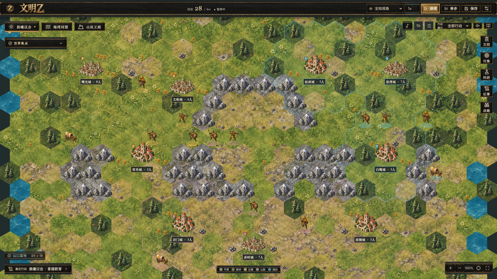
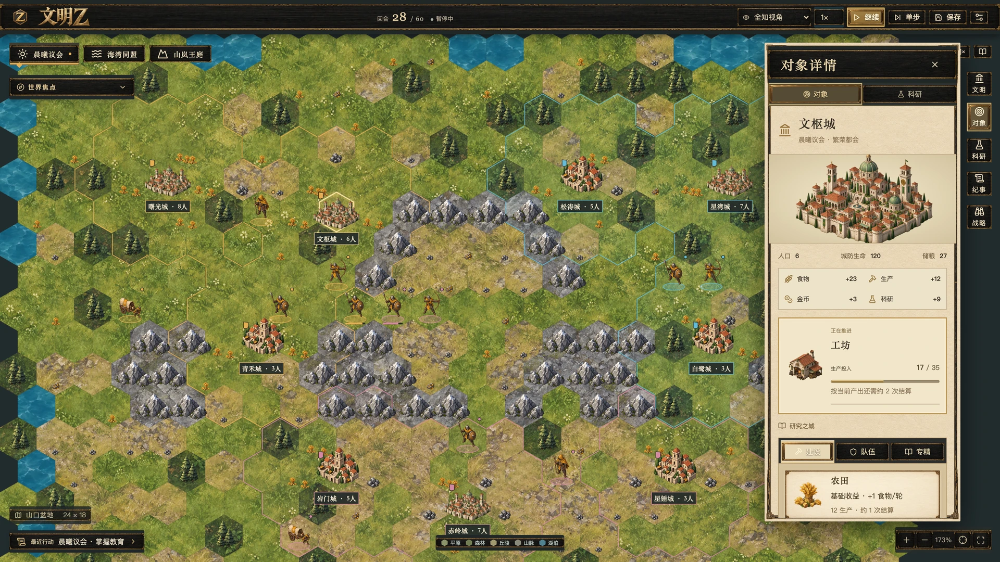
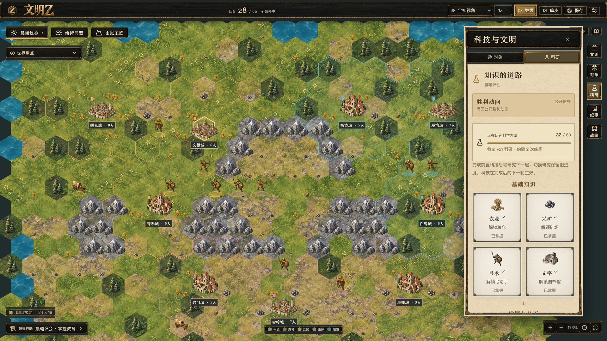
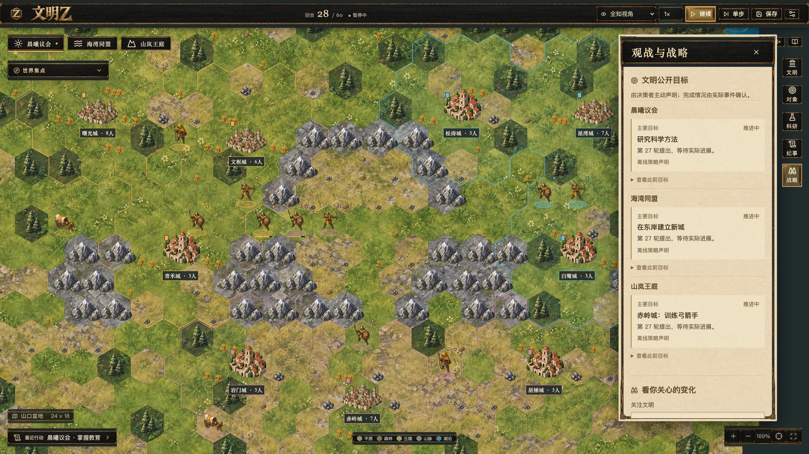
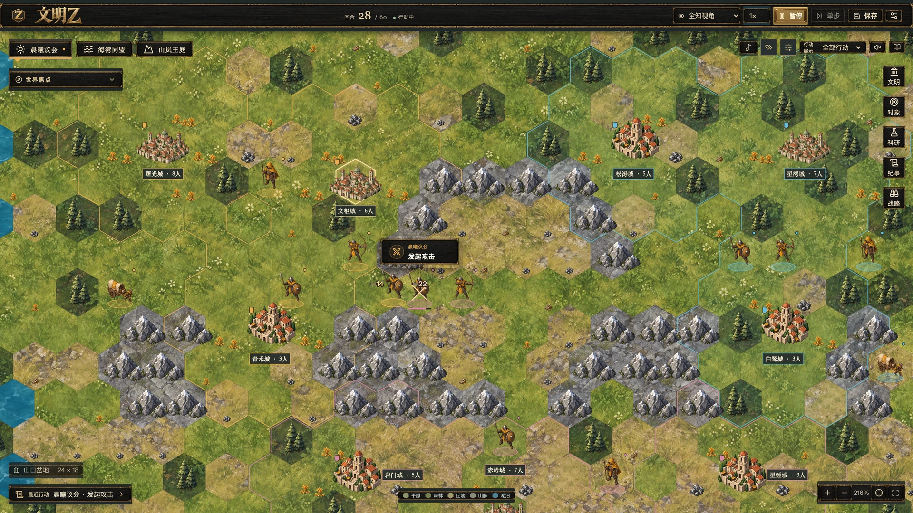

项目 / AI Agents · Strategy Game · Simulation
文明Z
我想把 AI 的决策过程放进一张看得见变化的地图里。于是有了《文明Z》：三个文明从各自的首都出发，探索、建设、竞争，而我可以在旁观与接管之间切换。
- 游戏与 AI 应用开发
- 本地可玩 · 持续迭代
- React / TypeScript / Fastify
- No. 01

为什么想做一个 AI 文明沙盘
这里选用的是游戏实机截图。为了集中展示不同玩法，图中的局面经过人工布置，并非 AI 自主完成的一场对局。点击图片可以查看原图。
如果让几个 AI 在同一片大陆上发展，它们会怎样选择自己的道路？这是我做《文明Z》最想探索的问题。我给它们准备了一张默认 24 × 18 的六边形地图，让三个文明从首都出发，探索迷雾、建立城市、积累资源。每个文明依次行动，再统一结算，默认一局最多 60 轮。
我关心的是这些选择怎样改变地图：一座城建在哪里，科研与扩张怎么分配资源，什么时候需要为冲突做准备。为了让游戏不依赖 API 也能运行，我保留了免费的离线规则策略；它不调用大模型。接入 DeepSeek → Jev 后，则可以在同一套规则下观察模型的决策。游戏目前在本机浏览器里运行，是一个单人沙盘。

让城市建设有取舍
我希望建城之后还有持续经营的空间。人口、粮食和生产决定发展的速度，粮仓、工坊、图书馆与新部队都需要跨轮完成。先造一个开拓者，还是先补一座图书馆？同一座城的生产时间有限，这些选择才会有分量。
研究、工业和军备专精让城市有了不同的分工，也提供有限的建设投资。操作上，我保留了直接点选城市和部队的方式：接管之后可以安排生产、指定目的地、查看攻击风险。自然语言适合表达意图，但不该成为每一步操作的必经之路。

给文明留下不同的发展路线
胜利条件决定了文明会为什么而发展。我设置了科技与征服两条提前结束对局的路线：前者需要掌握科学方法，再完成科研工程；后者需要同时控制全部初始首都。到了轮次上限还没有分出胜负，就按综合得分结算。
我想保留的，是这几条路线之间的拉扯。科研需要城市产出，扩张要投入建设，准备战争又会占用资源。它们共用一套时间和资源约束，让眼前的选择能影响之后的局面。至于怎样让不同路线都有机会，还需要继续打磨平衡。

旁观之外，也能参与其中
只看 AI 自己推进，很容易不知道它刚才为什么停下，或到底在忙什么。所以我把行动气泡、可定位的世界纪事和公开目标放进了观战界面。想法和结果分开展示，也可以关注某个文明或区域，遇到宣战、首都受击等关键事件时自动暂停。
我把参与方式分成了轻重两层。轻一点，可以给文明一个持续五次 AI 决策的战略方向，例如优先科研或守住领土，具体动作仍由它决定；想亲自操作时，就在目标文明下一个可接管的行动阶段接手。退出接管会结束它本轮的行动，下一轮再交回 AI。

让地图承担叙事
我更希望观众记住的是某个山口发生了交战、哪座城市易手了，而不是日志里又多了几行文字。单位按移动力、地形和占位规则前进，攻击与反击由引擎计算，界面再把已经发生的行动画成轨迹、伤害数字和气泡。一次远距离行军，也能从地图上看出它走到了哪里。
视觉上，我选了微缩城邦、手绘地形和古地图色调，城市外观会随人口阶段变化。面板按需展开，把大部分空间留给地图；资源与军事图层、名称开关和字号调整，则留给观众按自己的习惯选择。相比把所有信息同时堆出来，我更在意看一眼能不能读懂当前局面。

把模型决策接到规则引擎里
这个项目里，我最在意的工程划分，是把模型的意图和游戏状态的变化分开。规则引擎、AI 适配、共享契约、Fastify 服务端与 React 前端分别放在 TypeScript 工作区中。接入模型时，决策经过下面四步；离线策略直接产生候选命令，但仍使用同一套规则校验。
-
01 / OBSERVE
限定观察
给每个文明提供自身状态、可见地图和私有记忆。观众可以看全局，模型则按所属文明的视野做决定。
-
02 / TRANSLATE
策略与转译
由 DeepSeek 提出行动意图，再交给 Jev 转成结构化命令。转译对应原文片段，计划、引述和无法明确解析的内容不直接执行。
-
03 / VALIDATE
服务端裁决
服务端检查运行实例、状态版本与控制权，再由规则引擎判断命令是否成立，结算移动、建设和战斗。
-
04 / RECORD
事实与反馈
把执行结果记录为事件，驱动地图、纪事和下一次观察。行动受阻时也保留原因，方便理解和排查。
人工自然语言指令也走预览、确认、执行这条路径。读档时会创建新的运行实例，避免旧请求落到恢复后的世界里；模型调用预算单独记账，读取旧档不会把已消耗的额度清零。这些处理不太显眼，但关系到暂停、接管和存档能不能可靠地一起工作。
我把暂停、单步和倍速留在了观看过程中：有时只想看文明往前发展，有时又想停下来弄清楚一步决策。存档负责继续游玩，纪事负责回看关键事件。目前还没有做完整的模型回答回放，这和恢复一局游戏是两件不同的事。
接下来，我更想把一局游戏打磨好
除了核心对局，我也补上了主菜单、开场短片、背景音乐和五步离线教学，准备了“守住首都”和“落后文明反超”两个固定局面挑战。希望第一次打开时就能知道从哪里开始，而不必先理解模型配置和一长串规则。
接下来我更想打磨一局游戏本身的节奏：发展期会不会太平淡，战争与科研能否各有机会，到了中后期还有没有值得介入的选择。能把一局跑完只是基础，我希望它既能让我观察 AI 的决策，也能让人愿意继续看下一轮。
目前我先把它作为本地单人项目持续迭代，暂未开放在线试玩和源码。离线模式不需要模型调用费用；接入真实模型或使用自然语言转译时，需要自行配置相应服务，也会涉及 API 成本。